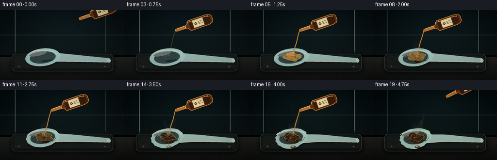
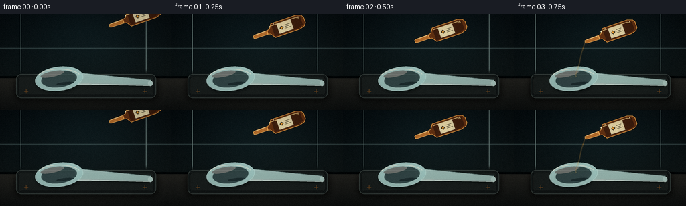
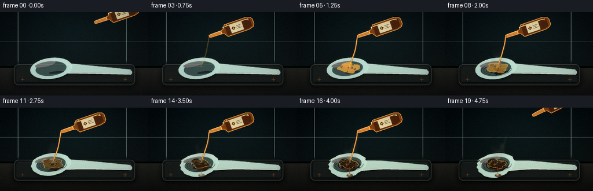
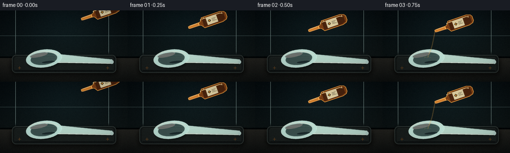

CODING AGENTS AS PIXEL WORLD MODELS
traex/DeepSeek-V4.1-Flash · material_0041
点击播放 · 原生 RGB 像素
逐轮保存的候选
回放视频、检查图与代码变化。
每份候选均可单独播放。实际图片检查记录在下方工具轨迹中。
候选 01播放与检查图
点击播放 · 原生 RGB 像素


展开代码变化
--- 上一保存版本
+++ 本次保存版本
@@ -0,0 +1,743 @@
+from __future__ import annotations
+
+import math
+import random
+from pathlib import Path
+
+import numpy as np
+from PIL import Image, ImageChops, ImageDraw, ImageFilter
+
+from artifact_io import save
+
+
+W, H, N, FPS = 256, 144, 20, 4
+S = 4
+FW, FH = W * S, H * S
+CASE_DIR = Path(__file__).resolve().parent
+
+
+def clamp(value: float, low: float = 0.0, high: float = 1.0) -> float:
+ return max(low, min(high, value))
+
+
+def smoothstep(edge0: float, edge1: float, value: float) -> float:
+ if edge0 == edge1:
+ return float(value >= edge1)
+ x = clamp((value - edge0) / (edge1 - edge0))
+ return x * x * (3.0 - 2.0 * x)
+
+
+def ease_out(value: float) -> float:
+ value = clamp(value)
+ return 1.0 - (1.0 - value) ** 3
+
+
+def sc(value: float) -> int:
+ return int(round(value * S))
+
+
+def sc_xy(x: float, y: float) -> tuple[int, int]:
+ return sc(x), sc(y)
+
+
+def scaled_points(points: list[tuple[float, float]]) -> list[tuple[int, int]]:
+ return [(sc(x), sc(y)) for x, y in points]
+
+
+def ellipse_points(
+ cx: float, cy: float, rx: float, ry: float, angle_deg: float, count: int = 96
+) -> list[tuple[float, float]]:
+ angle = math.radians(angle_deg)
+ ca, sa = math.cos(angle), math.sin(angle)
+ points = []
+ for i in range(count):
+ theta = math.tau * i / count
+ x = rx * math.cos(theta)
+ y = ry * math.sin(theta)
+ points.append((cx + x * ca - y * sa, cy + x * sa + y * ca))
+ return points
+
+
+def lerp(a: float, b: float, t: float) -> float:
+ return a + (b - a) * t
+
+
+def mix_color(
+ a: tuple[int, int, int], b: tuple[int, int, int], t: float
+) -> tuple[int, int, int]:
+ t = clamp(t)
+ return tuple(int(round(lerp(a[i], b[i], t))) for i in range(3))
+
+
+def make_background(frame: int) -> Image.Image:
+ t = frame / (N - 1)
+ yy, xx = np.mgrid[0:FH, 0:FW].astype(np.float32)
+ yn = yy / FH
+ xn = xx / FW
+
+ top = np.array([8, 14, 17], dtype=np.float32)
+ bottom = np.array([18, 25, 25], dtype=np.float32)
+ grad = top[None, None, :] * (1.0 - yn[..., None]) + bottom[None, None, :] * yn[..., None]
+
+ # A cool, soft key light gives the background depth without competing with the reaction.
+ glow = np.exp(
+ -(((xx - FW * 0.52) / (FW * 0.38)) ** 2 + ((yy - FH * 0.22) / (FH * 0.48)) ** 2)
+ )
+ grad += np.array([5.0, 11.0, 12.0], dtype=np.float32)[None, None, :] * glow[..., None]
+ grad += np.array([4.0, 2.5, 1.0], dtype=np.float32)[None, None, :] * (
+ xn[..., None] * 0.4
+ )
+
+ table_top = 96.0
+ table_mask = yy >= table_top * S
+ table_y = np.clip((yy - table_top * S) / ((H - table_top) * S), 0.0, 1.0)
+ table = (
+ np.array([36, 36, 33], dtype=np.float32)[None, None, :] * (1.0 - table_y[..., None])
+ + np.array([16, 19, 19], dtype=np.float32)[None, None, :] * table_y[..., None]
+ )
+ table += np.array([4.0, 3.0, 1.5], dtype=np.float32)[None, None, :] * (
+ np.clip(1.0 - abs(xn - 0.52) * 1.5, 0, 1)[..., None]
+ )
+ grad = np.where(table_mask[..., None], table, grad)
+
+ # Fine surface grain is fixed in scene space and scaled up by the supersampler.
+ rng = np.random.default_rng(9182)
+ grain = rng.normal(0.0, 1.8, (FH, FW, 1)).astype(np.float32)
+ grad += grain
+
+ image = Image.fromarray(np.clip(grad, 0, 255).astype(np.uint8), "RGB").convert("RGBA")
+ draw = ImageDraw.Draw(image, "RGBA")
+
+ # Out-of-focus wall seams and a shadow gap behind the bench.
+ draw.line((0, sc(51), FW, sc(51)), fill=(92, 116, 115, 14), width=max(1, S // 2))
+ draw.line((sc(31), 0, sc(31), sc(94)), fill=(105, 125, 122, 10), width=S)
+ draw.line((sc(218), 0, sc(218), sc(94)), fill=(105, 125, 122, 8), width=S)
+ draw.rectangle((0, sc(93), FW, sc(96)), fill=(4, 8, 9, 130))
+
+ # Warm laboratory light reflected on the bench, slowly shifting during the time-lapse.
+ warm = int(8 + 10 * t)
+ reflection = Image.new("RGBA", (FW, FH), (0, 0, 0, 0))
+ rdraw = ImageDraw.Draw(reflection, "RGBA")
+ rdraw.ellipse((sc(120), sc(95), sc(232), sc(127)), fill=(122, 83, 40, warm))
+ reflection = reflection.filter(ImageFilter.GaussianBlur(sc(10)))
+ image.alpha_composite(reflection)
+
+ # Sparse bench speckle.
+ rng = random.Random(100 + frame // 4)
+ for _ in range(42):
+ x = rng.uniform(2, W - 2)
+ y = rng.uniform(101, H - 2)
+ v = rng.randint(52, 86)
+ draw.point((sc(x), sc(y)), fill=(v, v - 2, v - 5, rng.randint(25, 65)))
+ return image
+
+
+def draw_tray(image: Image.Image, frame: int) -> None:
+ shadow = Image.new("RGBA", (FW, FH), (0, 0, 0, 0))
+ sd = ImageDraw.Draw(shadow, "RGBA")
+ sd.rounded_rectangle(
+ (sc(22), sc(94), sc(236), sc(130)),
+ radius=sc(10),
+ fill=(0, 0, 0, 155),
+ )
+ shadow = shadow.filter(ImageFilter.GaussianBlur(sc(4.5)))
+ image.alpha_composite(shadow)
+
+ layer = Image.new("RGBA", (FW, FH), (0, 0, 0, 0))
+ draw = ImageDraw.Draw(layer, "RGBA")
+ draw.rounded_rectangle(
+ (sc(24), sc(90), sc(233), sc(126)),
+ radius=sc(8),
+ fill=(22, 27, 27, 255),
+ outline=(58, 67, 64, 255),
+ width=sc(0.9),
+ )
+ draw.rounded_rectangle(
+ (sc(27), sc(93), sc(230), sc(123)),
+ radius=sc(6),
+ fill=(27, 32, 31, 255),
+ outline=(15, 19, 19, 255),
+ width=sc(1.0),
+ )
+ draw.line((sc(31), sc(94), sc(226), sc(94)), fill=(83, 94, 88, 85), width=sc(0.8))
+ draw.line((sc(31), sc(121), sc(226), sc(121)), fill=(8, 11, 12, 170), width=sc(1.1))
+ draw.line((sc(28), sc(99), sc(28), sc(116)), fill=(65, 76, 72, 50), width=sc(0.7))
+
+ # Matte lab-tray texture.
+ rng = random.Random(510)
+ for _ in range(130):
+ x = rng.uniform(30, 227)
+ y = rng.uniform(96, 120)
+ alpha = rng.randint(8, 24)
+ draw.point(sc_xy(x, y), fill=(112, 125, 116, alpha))
+
+ # Small orange registration marks make the tray read as a deliberate lab object.
+ for x in (39, 216):
+ draw.line((sc(x - 3), sc(116), sc(x + 3), sc(116)), fill=(189, 118, 50, 145), width=sc(0.7))
+ draw.line((sc(x), sc(113), sc(x), sc(119)), fill=(189, 118, 50, 145), width=sc(0.7))
+ image.alpha_composite(layer)
+
+
+def deformed_bowl(frame: int) -> tuple[list[tuple[float, float]], float, float]:
+ damage = smoothstep(5.0, 17.0, frame)
+ sag = smoothstep(6.0, 18.0, frame)
+ cx, cy = 88.0, 97.0
+ points = ellipse_points(cx, cy, 36.0, 18.0, -7.0, 120)
+ result = []
+ for x, y in points:
+ yn = clamp((y - cy) / 18.0, -1.0, 1.0)
+ xn = clamp((x - cx) / 36.0, -1.0, 1.0)
+ # The lower edge sinks and the sides curl inward as the bowl softens.
+ x = cx + (x - cx) * (1.0 - 0.10 * damage)
+ y += 5.8 * sag * max(0.0, yn) ** 1.4 * (1.0 - 0.30 * abs(xn))
+ y -= 1.0 * sag * max(0.0, -yn) * (abs(xn) ** 2)
+ x += 0.9 * math.sin(y * 0.85 + frame * 0.6) * damage
+ result.append((x, y))
+ return result, damage, sag
+
+
+def handle_polygon(frame: int, damage: float) -> list[tuple[float, float]]:
+ top: list[tuple[float, float]] = []
+ bottom: list[tuple[float, float]] = []
+ samples = 32
+ for i in range(samples + 1):
+ t = i / samples
+ cx = lerp(108.0, 225.0, t)
+ cy = lerp(96.0, 103.0, t)
+ # A short local sag where the hot acid has weakened the neck of the spoon.
+ cy += 3.2 * smoothstep(7.0, 17.0, frame) * math.exp(-((cx - 112.0) / 24.0) ** 2)
+ width = lerp(9.2, 4.2, t**0.85)
+ dx = 117.0
+ dy = 7.0
+ length = math.hypot(dx, dy)
+ nx, ny = -dy / length, dx / length
+ top.append((cx + nx * width, cy + ny * width))
+ bottom.append((cx - nx * width, cy - ny * width))
+ return top + bottom[::-1]
+
+
+def draw_spoon(image: Image.Image, frame: int) -> tuple[float, float, float]:
+ bowl_points, damage, sag = deformed_bowl(frame)
+
+ # Contact shadow and a faint translucent caustic under the plastic.
+ shadow = Image.new("RGBA", (FW, FH), (0, 0, 0, 0))
+ sd = ImageDraw.Draw(shadow, "RGBA")
+ shadow_bowl = [(x + 1.2, y + 2.5) for x, y in bowl_points]
+ sd.polygon(scaled_points(shadow_bowl), fill=(0, 0, 0, 135))
+ handle_shadow = [(x + 1.0, y + 2.2) for x, y in handle_polygon(frame, damage)]
+ sd.polygon(scaled_points(handle_shadow), fill=(0, 0, 0, 110))
+ shadow = shadow.filter(ImageFilter.GaussianBlur(sc(2.3)))
+ image.alpha_composite(shadow)
+
+ spoon = Image.new("RGBA", (FW, FH), (0, 0, 0, 0))
+ draw = ImageDraw.Draw(spoon, "RGBA")
+
+ handle = handle_polygon(frame, damage)
+ draw.polygon(scaled_points(handle), fill=(190, 216, 211, 188))
+ draw.line(scaled_points(handle[: len(handle) // 2]), fill=(227, 243, 236, 210), width=sc(1.1))
+ draw.line(scaled_points(handle[len(handle) // 2 :]), fill=(102, 130, 128, 175), width=sc(0.8))
+ # A thin molded ridge catches the cool key light.
+ ridge = [(x, y - 0.8) for x, y in handle[: len(handle) // 2]]
+ draw.line(scaled_points(ridge), fill=(244, 251, 245, 155), width=sc(0.45))
+ draw.ellipse(
+ (sc(221), sc(100), sc(228), sc(108)),
+ fill=(198, 222, 216, 205),
+ outline=(230, 244, 237, 190),
+ width=sc(0.55),
+ )
+
+ draw.polygon(
+ scaled_points(bowl_points),
+ fill=(181, 211, 207, 205),
+ outline=(219, 240, 233, 235),
+ )
+ inner = ellipse_points(88.0, 97.5, 27.0, 12.5, -7.0, 100)
+ inner = [
+ (88.0 + (x - 88.0) * (1.0 - 0.10 * damage), y + 1.5 * sag * max(0.0, y - 97.5) / 12.5)
+ for x, y in inner
+ ]
+ draw.polygon(scaled_points(inner), fill=(98, 136, 137, 112), outline=(206, 232, 226, 185))
+
+ # Broad specular sweeps on the bowl and handle.
+ spec = ellipse_points(78.0, 90.0, 18.0, 4.1, -12.0, 72)
+ draw.polygon(scaled_points(spec), fill=(245, 251, 243, 105))
+ spec2 = ellipse_points(97.0, 104.0, 13.0, 2.0, -6.0, 56)
+ draw.polygon(scaled_points(spec2), fill=(65, 103, 108, 85))
+ draw.arc(
+ (sc(54), sc(82), sc(123), sc(113)),
+ start=202,
+ end=330,
+ fill=(250, 252, 237, 195),
+ width=sc(1.0),
+ )
+
+ # Progressive charring on the plastic around the point of contact.
+ char = smoothstep(4.5, 15.5, frame)
+ if char > 0.01:
+ rng = random.Random(750)
+ for i in range(19):
+ angle = rng.uniform(0, math.tau)
+ distance = rng.uniform(0, 17.0)
+ x = 90.0 + math.cos(angle) * distance
+ y = 98.5 + math.sin(angle) * distance * 0.50
+ rx = rng.uniform(2.2, 7.8) * (0.4 + 0.6 * char)
+ ry = rng.uniform(1.3, 4.2) * (0.4 + 0.6 * char)
+ color = mix_color((85, 60, 34), (27, 24, 20), rng.random())
+ alpha = int(clamp(char * rng.uniform(80, 205), 0, 230))
+ pts = ellipse_points(x, y, rx, ry, rng.uniform(-20, 20), 22)
+ draw.polygon(scaled_points(pts), fill=(*color, alpha))
+
+ # Concentric heat wrinkles in the softened rim.
+ for radius, color, alpha in (
+ (17.5, (111, 77, 39), 100),
+ (22.0, (85, 61, 38), 80),
+ (26.0, (54, 47, 38), 65),
+ ):
+ arc_pts = ellipse_points(89.0, 99.0, radius, radius * 0.43, -5.0, 40)
+ draw.line(
+ scaled_points(arc_pts[:26]),
+ fill=(*color, int(alpha * char)),
+ width=sc(0.55),
+ )
+
+ # Remove an irregular central hole only after the reaction has advanced.
+ hole = smoothstep(9.0, 17.0, frame)
+ hole_r = 1.5 + 14.0 * hole
+ if hole > 0.01:
+ hole_mask = Image.new("L", (FW, FH), 0)
+ hd = ImageDraw.Draw(hole_mask)
+ points = []
+ for i in range(72):
+ theta = math.tau * i / 72
+ wobble = 1.0 + 0.20 * math.sin(theta * 5.0 + frame * 0.55) + 0.11 * math.sin(theta * 9.0)
+ points.append(
+ (
+ 90.5 + math.cos(theta) * hole_r * wobble,
+ 98.5 + math.sin(theta) * hole_r * 0.48 * wobble,
+ )
+ )
+ hd.polygon(scaled_points(points), fill=255)
+ alpha = spoon.getchannel("A")
+ spoon.putalpha(ImageChops.subtract(alpha, hole_mask))
+
+ image.alpha_composite(spoon)
+
+ # Dark char lip and a wet, glossy residue make the opening legible.
+ if hole > 0.01:
+ lip = Image.new("RGBA", (FW, FH), (0, 0, 0, 0))
+ ld = ImageDraw.Draw(lip, "RGBA")
+ for spread, color, alpha in (
+ (2.6, (42, 31, 24), 205),
+ (1.2, (111, 67, 32), 145),
+ ):
+ pts = ellipse_points(90.5, 98.5, hole_r + spread, (hole_r + spread) * 0.49, -4.0, 70)
+ ld.line(scaled_points(pts), fill=(*color, int(alpha * hole)), width=sc(1.0))
+ puddle = ellipse_points(90.5, 99.2, max(2.0, hole_r * 0.90), max(1.2, hole_r * 0.42), -4.0, 60)
+ ld.polygon(scaled_points(puddle), fill=(38, 28, 19, int(220 * hole)))
+ glint = ellipse_points(87.2, 97.5, max(1.0, hole_r * 0.27), max(0.7, hole_r * 0.12), -12.0, 32)
+ ld.polygon(scaled_points(glint), fill=(217, 154, 72, int(145 * hole)))
+ image.alpha_composite(lip)
+
+ return damage, sag, hole
+
+
+def bottle_geometry(frame: int) -> tuple[tuple[float, float], float, float]:
+ enter = ease_out(clamp(frame / 3.0))
+ exit_amount = smoothstep(16.0, 19.5, frame)
+ ox = 58.0 * (1.0 - enter) + 49.0 * exit_amount
+ oy = -24.0 * (1.0 - enter) - 30.0 * exit_amount
+ neck = (105.0 + ox, 42.0 + oy)
+ angle = math.radians(-19.0 - 8.0 * exit_amount)
+ return neck, math.cos(angle), math.sin(angle)
+
+
+def bottle_point(
+ neck: tuple[float, float], ax: float, ay: float, u: float, v: float
+) -> tuple[float, float]:
+ # Perpendicular to the bottle axis.
+ return (neck[0] + ax * u - ay * v, neck[1] + ay * u + ax * v)
+
+
+def draw_bottle(image: Image.Image, frame: int) -> tuple[tuple[float, float], float, float]:
+ neck, ax, ay = bottle_geometry(frame)
+ if neck[0] > W + 50 or neck[1] > H + 50:
+ return neck, ax, ay
+
+ layer = Image.new("RGBA", (FW, FH), (0, 0, 0, 0))
+ draw = ImageDraw.Draw(layer, "RGBA")
+
+ def poly(points: list[tuple[float, float]], fill: tuple[int, ...], outline=None, width: int = 1):
+ draw.polygon(scaled_points(points), fill=fill, outline=outline, width=width)
+
+ # Main amber glass body. The short, narrow neck points down toward the spoon.
+ body = [
+ bottle_point(neck, ax, ay, 22.0, -3.3),
+ bottle_point(neck, ax, ay, 26.0, -4.0),
+ bottle_point(neck, ax, ay, 31.0, -11.2),
+ bottle_point(neck, ax, ay, 70.0, -11.2),
+ bottle_point(neck, ax, ay, 78.0, -8.8),
+ bottle_point(neck, ax, ay, 81.0, -4.5),
+ bottle_point(neck, ax, ay, 81.0, 4.5),
+ bottle_point(neck, ax, ay, 78.0, 8.8),
+ bottle_point(neck, ax, ay, 70.0, 11.2),
+ bottle_point(neck, ax, ay, 31.0, 11.2),
+ bottle_point(neck, ax, ay, 26.0, 4.0),
+ bottle_point(neck, ax, ay, 22.0, 3.3),
+ ]
+ poly(body, (108, 54, 20, 226), (235, 163, 72, 235), sc(1.0))
+
+ neck_poly = [
+ bottle_point(neck, ax, ay, 0.0, -2.1),
+ bottle_point(neck, ax, ay, 3.0, -3.0),
+ bottle_point(neck, ax, ay, 22.0, -3.3),
+ bottle_point(neck, ax, ay, 22.0, 3.3),
+ bottle_point(neck, ax, ay, 3.0, 3.0),
+ bottle_point(neck, ax, ay, 0.0, 2.1),
+ ]
+ poly(neck_poly, (192, 121, 48, 220), (244, 189, 101, 220), sc(0.8))
+
+ # Dark liquid silhouette inside the body, with a luminous glass edge.
+ liquid = [
+ bottle_point(neck, ax, ay, 31.0, -8.8),
+ bottle_point(neck, ax, ay, 69.0, -8.8),
+ bottle_point(neck, ax, ay, 76.0, -5.8),
+ bottle_point(neck, ax, ay, 76.0, 6.2),
+ bottle_point(neck, ax, ay, 69.0, 9.0),
+ bottle_point(neck, ax, ay, 31.0, 9.0),
+ ]
+ poly(liquid, (80, 34, 12, 185))
+ highlight = [
+ bottle_point(neck, ax, ay, 31.0, -7.6),
+ bottle_point(neck, ax, ay, 69.0, -7.6),
+ bottle_point(neck, ax, ay, 74.0, -5.0),
+ ]
+ draw.line(scaled_points(highlight), fill=(255, 210, 128, 190), width=sc(1.3))
+ rim = [bottle_point(neck, ax, ay, 4.0, -2.3), bottle_point(neck, ax, ay, 20.0, -2.4)]
+ draw.line(scaled_points(rim), fill=(255, 231, 174, 230), width=sc(0.8))
+
+ # Paper label and a tiny hazard diamond, readable without adding UI copy.
+ label = [
+ bottle_point(neck, ax, ay, 39.0, -7.7),
+ bottle_point(neck, ax, ay, 61.0, -7.7),
+ bottle_point(neck, ax, ay, 61.0, 7.7),
+ bottle_point(neck, ax, ay, 39.0, 7.7),
+ ]
+ poly(label, (219, 207, 171, 236), (245, 236, 202, 210), sc(0.45))
+ d1 = bottle_point(neck, ax, ay, 44.5, 0.0)
+ diamond = [
+ bottle_point(neck, ax, ay, 44.5, -3.1),
+ bottle_point(neck, ax, ay, 47.8, 0.0),
+ bottle_point(neck, ax, ay, 44.5, 3.1),
+ bottle_point(neck, ax, ay, 41.2, 0.0),
+ ]
+ poly(diamond, (39, 37, 31, 230))
+ poly(
+ [
+ bottle_point(neck, ax, ay, 44.5, -1.8),
+ bottle_point(neck, ax, ay, 46.1, 0.0),
+ bottle_point(neck, ax, ay, 44.5, 1.8),
+ bottle_point(neck, ax, ay, 42.9, 0.0),
+ ],
+ (231, 154, 45, 235),
+ )
+ for u0, u1, v in ((50.0, 58.0, -2.4), (50.0, 56.0, 0.0), (50.0, 59.0, 2.4)):
+ draw.line(
+ scaled_points(
+ [bottle_point(neck, ax, ay, u0, v), bottle_point(neck, ax, ay, u1, v)]
+ ),
+ fill=(55, 49, 37, 210),
+ width=sc(0.65),
+ )
+
+ # Specular pinpricks on the upper glass shoulder.
+ for u, v, r in ((28.0, -7.0, 0.9), (35.0, -9.2, 0.55), (73.0, -7.3, 0.7)):
+ x, y = bottle_point(neck, ax, ay, u, v)
+ draw.ellipse((sc(x - r), sc(y - r), sc(x + r), sc(y + r)), fill=(255, 239, 193, 235))
+
+ image.alpha_composite(layer)
+ return neck, ax, ay
+
+
+def draw_stream_and_splash(
+ image: Image.Image, frame: int, neck: tuple[float, float], ax: float, ay: float
+) -> None:
+ pour = smoothstep(2.4, 4.2, frame) * (1.0 - smoothstep(16.5, 19.0, frame))
+ if pour <= 0.01:
+ return
+
+ nozzle = bottle_point(neck, ax, ay, 0.0, 0.0)
+ impact = (90.5, 95.0)
+ layer = Image.new("RGBA", (FW, FH), (0, 0, 0, 0))
+ draw = ImageDraw.Draw(layer, "RGBA")
+
+ points = []
+ for i in range(30):
+ t = i / 29
+ x = lerp(nozzle[0], impact[0], t)
+ y = lerp(nozzle[1], impact[1], t)
+ x += math.sin(t * 8.0 + frame * 0.85) * 0.55 * math.sin(math.pi * t)
+ points.append((x, y))
+ draw.line(scaled_points(points), fill=(118, 72, 25, int(210 * pour)), width=sc(2.2))
+ draw.line(
+ scaled_points([(x - 0.25, y) for x, y in points]),
+ fill=(242, 186, 88, int(230 * pour)),
+ width=sc(0.85),
+ )
+ draw.line(
+ scaled_points([(x + 0.55, y) for x, y in points]),
+ fill=(255, 236, 176, int(170 * pour)),
+ width=sc(0.32),
+ )
+
+ # Splashes follow deterministic arcs and settle as the stream tapers off.
+ rng = random.Random(304)
+ for i in range(13):
+ phase = (frame * 0.47 + rng.random()) % 1.0
+ side = -1.0 if i % 2 == 0 else 1.0
+ dx = side * (1.0 + phase * rng.uniform(3.0, 8.5))
+ dy = -math.sin(phase * math.pi) * rng.uniform(1.5, 6.0) + phase * 3.2
+ x = impact[0] + dx
+ y = impact[1] + dy
+ r = rng.uniform(0.35, 0.9) * (1.0 - 0.35 * phase)
+ draw.ellipse(
+ (sc(x - r), sc(y - r), sc(x + r), sc(y + r)),
+ fill=(255, 204, 105, int((175 - 95 * phase) * pour)),
+ )
+ image.alpha_composite(layer)
+
+
+def draw_reaction(
+ image: Image.Image, frame: int, damage: float, sag: float, hole: float
+) -> None:
+ contact = smoothstep(3.3, 5.0, frame)
+ if contact <= 0.01:
+ return
+
+ layer = Image.new("RGBA", (FW, FH), (0, 0, 0, 0))
+ draw = ImageDraw.Draw(layer, "RGBA")
+
+ # A warm reaction glow is strongest during the first half of the visible chemistry.
+ glow_strength = contact * (1.0 - 0.45 * smoothstep(9.0, 18.0, frame))
+ glow = Image.new("RGBA", (FW, FH), (0, 0, 0, 0))
+ gd = ImageDraw.Draw(glow, "RGBA")
+ for r, alpha in ((16.0, 42), (10.0, 54), (5.0, 62)):
+ gd.ellipse(
+ (sc(90.5 - r), sc(96.0 - r * 0.54), sc(90.5 + r), sc(96.0 + r * 0.54)),
+ fill=(218, 130, 42, int(alpha * glow_strength)),
+ )
+ glow = glow.filter(ImageFilter.GaussianBlur(sc(4.5)))
+ layer.alpha_composite(glow)
+
+ # Irregular acid pool: clear amber, then orange-brown, then a charred glossy residue.
+ radius = 3.0 + 14.5 * contact
+ if hole > 0.35:
+ radius *= 0.83
+ pool_points = []
+ for i in range(60):
+ theta = math.tau * i / 60
+ wobble = 1.0 + 0.13 * math.sin(theta * 4.0 + frame * 0.48) + 0.06 * math.sin(theta * 7.0 - 0.8)
+ pool_points.append(
+ (
+ 90.5 + math.cos(theta) * radius * wobble,
+ 96.0 + math.sin(theta) * radius * 0.48 * wobble + sag * 1.3,
+ )
+ )
+ pool_color = mix_color((214, 157, 58), (61, 38, 23), smoothstep(4.0, 15.0, frame))
+ draw.polygon(scaled_points(pool_points), fill=(*pool_color, int(170 * contact)))
+ draw.line(
+ scaled_points(pool_points),
+ fill=(243, 183, 74, int(150 * contact)),
+ width=sc(0.65),
+ )
+
+ # Bubbles have staggered births and lifetimes, so the reaction keeps evolving.
+ bubbles = []
+ rng = random.Random(881)
+ for i in range(64):
+ birth = rng.uniform(4.0, 17.5)
+ life = rng.uniform(2.0, 5.4)
+ angle = rng.uniform(0, math.tau)
+ dist = rng.uniform(0, 1.0) ** 0.7
+ bx = 90.5 + math.cos(angle) * 15.5 * dist
+ by = 96.5 + math.sin(angle) * 6.6 * dist
+ br = rng.uniform(0.55, 2.4)
+ bubbles.append((birth, life, bx, by, br, rng.uniform(-1.3, 1.3)))
+
+ for birth, life, bx, by, br, drift in bubbles:
+ age = (frame - birth) / life
+ if 0.0 <= age <= 1.0:
+ x = bx + drift * age
+ y = by - age * 2.8
+ r = br * (0.55 + 0.55 * math.sin(math.pi * age))
+ alpha = int(190 * math.sin(math.pi * age) * contact)
+ bubble_fill = mix_color((166, 98, 37), (28, 24, 20), smoothstep(6.0, 14.0, frame))
+ draw.ellipse(
+ (sc(x - r), sc(y - r), sc(x + r), sc(y + r)),
+ fill=(*bubble_fill, alpha),
+ outline=(244, 188, 88, min(220, alpha + 25)),
+ width=max(1, sc(0.28)),
+ )
+ if r > 0.9:
+ draw.ellipse(
+ (sc(x - r * 0.43), sc(y - r * 0.55), sc(x - r * 0.05), sc(y - r * 0.15)),
+ fill=(255, 231, 158, min(220, alpha + 35)),
+ )
+
+ # Shriveled plastic ridges around the crater.
+ if damage > 0.05:
+ for i, (rx, ry, alpha) in enumerate(((24.0, 8.0, 92), (30.0, 10.0, 70))):
+ pts = ellipse_points(90.0, 97.0, rx, ry, -5.0, 48)
+ offset = int(i * 4)
+ draw.line(
+ scaled_points(pts[4 + offset : 25 + offset]),
+ fill=(76, 52, 32, int(alpha * damage)),
+ width=sc(0.55),
+ )
+
+ # Acid that has dripped through the spoon onto the tray.
+ if hole > 0.20:
+ drip = Image.new("RGBA", (FW, FH), (0, 0, 0, 0))
+ dd = ImageDraw.Draw(drip, "RGBA")
+ drip_alpha = int(190 * hole)
+ dd.line(
+ (sc(91), sc(102), sc(91.5), sc(116)),
+ fill=(118, 73, 31, drip_alpha),
+ width=sc(0.9),
+ )
+ dd.ellipse(
+ (sc(86), sc(114), sc(98), sc(120)),
+ fill=(55, 37, 24, int(200 * hole)),
+ outline=(169, 104, 42, int(130 * hole)),
+ width=sc(0.45),
+ )
+ dd.ellipse((sc(88.5), sc(115.1), sc(93.5), sc(117.1)), fill=(210, 143, 58, int(100 * hole)))
+ layer.alpha_composite(drip)
+
+ image.alpha_composite(layer)
+
+
+def draw_fumes(image: Image.Image, frame: int) -> None:
+ activity = smoothstep(5.0, 9.0, frame) * (0.70 + 0.30 * smoothstep(9.0, 18.0, frame))
+ if activity <= 0.01:
+ return
+
+ soft = Image.new("RGBA", (FW, FH), (0, 0, 0, 0))
+ draw = ImageDraw.Draw(soft, "RGBA")
+ rng = random.Random(4551)
+
+ # Tapered wisps rise and drift to the right, each at its own phase.
+ for i in range(10):
+ phase = rng.uniform(0, math.tau)
+ height = rng.uniform(20.0, 55.0)
+ drift = rng.uniform(-7.0, 18.0)
+ start_x = 90.0 + rng.uniform(-8.0, 9.0)
+ points = []
+ for j in range(15):
+ t = j / 14
+ x = start_x + drift * t + math.sin(t * 4.5 + phase + frame * 0.22) * (1.2 + 2.2 * t)
+ y = 94.0 - height * t
+ points.append((x, y))
+ width = rng.uniform(2.3, 4.6)
+ for j in range(len(points) - 1):
+ t = j / (len(points) - 1)
+ w = max(0.45, width * (1.0 - t))
+ color = mix_color((167, 161, 139), (78, 80, 72), 0.35 + 0.45 * t)
+ alpha = int(activity * (23 + 22 * (1.0 - t)))
+ draw.line(
+ [sc_xy(*points[j]), sc_xy(*points[j + 1])],
+ fill=(*color, alpha),
+ width=max(1, sc(w)),
+ )
+
+ # Smaller curls directly above the reaction keep the smoke connected to the spoon.
+ for i in range(12):
+ age = ((frame * 0.31 + i * 0.137) % 1.0)
+ x = 91.0 + math.sin(i * 2.7 + frame * 0.45) * (2.0 + 7.0 * age)
+ y = 92.0 - age * rng.uniform(18.0, 34.0)
+ rx = (2.0 + 4.2 * age) * (0.75 + 0.25 * math.sin(i + frame))
+ ry = (1.4 + 3.0 * age)
+ alpha = int(activity * (56 * (1.0 - age) + 10))
+ color = (177, 168, 140) if i % 3 else (109, 108, 94)
+ draw.ellipse(
+ (sc(x - rx), sc(y - ry), sc(x + rx), sc(y + ry)),
+ fill=(*color, alpha),
+ )
+
+ soft = soft.filter(ImageFilter.GaussianBlur(sc(2.8)))
+ image.alpha_composite(soft)
+
+ # A thinner, sharper smoke veil adds volume at the late stages.
+ if frame >= 10:
+ veil = Image.new("RGBA", (FW, FH), (0, 0, 0, 0))
+ vd = ImageDraw.Draw(veil, "RGBA")
+ late = smoothstep(10.0, 18.0, frame)
+ for i in range(7):
+ x0 = 85.0 + i * 2.4
+ y0 = 91.0
+ pts = []
+ for j in range(12):
+ t = j / 11
+ pts.append(
+ (
+ x0 + 12.0 * t + math.sin(t * 4.0 + i * 0.8 + frame * 0.18) * 2.8,
+ y0 - (28.0 + i * 3.2) * t,
+ )
+ )
+ vd.line(
+ scaled_points(pts),
+ fill=(210, 198, 164, int(20 * late)),
+ width=sc(1.4),
+ )
+ veil = veil.filter(ImageFilter.GaussianBlur(sc(1.5)))
+ image.alpha_composite(veil)
+
+
+def finalize(frame_image: Image.Image, frame: int) -> np.ndarray:
+ small = frame_image.convert("RGB").resize((W, H), Image.Resampling.LANCZOS)
+ arr = np.asarray(small, dtype=np.float32)
+
+ # Gentle bloom and warm highlights.
+ bright = np.clip(arr - 145.0, 0.0, None)
+ bloom = Image.fromarray(np.clip(bright * 1.8, 0, 255).astype(np.uint8))
+ bloom = bloom.filter(ImageFilter.GaussianBlur(2.2))
+ arr += np.asarray(bloom, dtype=np.float32) * 0.26
+
+ # Slight time-lapse grade: cool early light, warmer and more contrasty as char builds.
+ t = frame / (N - 1)
+ arr[..., 0] *= 1.00 + 0.035 * t
+ arr[..., 1] *= 1.00 + 0.010 * t
+ arr[..., 2] *= 1.00 - 0.025 * t
+ arr = (arr - 128.0) * (1.025 + 0.035 * t) + 128.0
+
+ yy, xx = np.mgrid[0:H, 0:W].astype(np.float32)
+ x = (xx - W * 0.5) / (W * 0.55)
+ y = (yy - H * 0.5) / (H * 0.56)
+ vignette = np.clip(1.0 - 0.16 * (x * x + y * y), 0.76, 1.0)
+ arr *= vignette[..., None]
+
+ rng = np.random.default_rng(2200 + frame)
+ arr += rng.normal(0.0, 1.15, (H, W, 1)).astype(np.float32)
+ return np.clip(arr, 0, 255).astype(np.uint8)
+
+
+def render_frame(frame: int) -> np.ndarray:
+ image = make_background(frame)
+ draw_tray(image, frame)
+ damage, sag, hole = draw_spoon(image, frame)
+ neck, ax, ay = draw_bottle(image, frame)
+ draw_stream_and_splash(image, frame, neck, ax, ay)
+ draw_reaction(image, frame, damage, sag, hole)
+ draw_fumes(image, frame)
+ return finalize(image, frame)
+
+
+def main() -> None:
+ frames = np.stack([render_frame(frame) for frame in range(N)])
+ assert frames.shape == (N, H, W, 3), frames.shape
+ assert frames.dtype == np.uint8
+ save(frames, CASE_DIR)
+ print(f"Rendered {N} frames at {W}x{H}, {FPS} fps -> {CASE_DIR}")
+
+
+if __name__ == "__main__":
+ main()
候选 02播放与检查图
点击播放 · 原生 RGB 像素


展开代码变化
--- 上一保存版本
+++ 本次保存版本
@@ -105,7 +105,7 @@
grain = rng.normal(0.0, 1.8, (FH, FW, 1)).astype(np.float32)
grad += grain
- image = Image.fromarray(np.clip(grad, 0, 255).astype(np.uint8), "RGB").convert("RGBA")
+ image = Image.fromarray(np.clip(grad, 0, 255).astype(np.uint8)).convert("RGBA")
draw = ImageDraw.Draw(image, "RGBA")
# Out-of-focus wall seams and a shadow gap behind the bench.
@@ -233,8 +233,8 @@
draw = ImageDraw.Draw(spoon, "RGBA")
handle = handle_polygon(frame, damage)
- draw.polygon(scaled_points(handle), fill=(190, 216, 211, 188))
- draw.line(scaled_points(handle[: len(handle) // 2]), fill=(227, 243, 236, 210), width=sc(1.1))
+ draw.polygon(scaled_points(handle), fill=(204, 229, 220, 205))
+ draw.line(scaled_points(handle[: len(handle) // 2]), fill=(239, 251, 240, 225), width=sc(1.15))
draw.line(scaled_points(handle[len(handle) // 2 :]), fill=(102, 130, 128, 175), width=sc(0.8))
# A thin molded ridge catches the cool key light.
ridge = [(x, y - 0.8) for x, y in handle[: len(handle) // 2]]
@@ -248,15 +248,15 @@
draw.polygon(
scaled_points(bowl_points),
- fill=(181, 211, 207, 205),
- outline=(219, 240, 233, 235),
+ fill=(196, 224, 216, 220),
+ outline=(233, 248, 237, 245),
)
inner = ellipse_points(88.0, 97.5, 27.0, 12.5, -7.0, 100)
inner = [
(88.0 + (x - 88.0) * (1.0 - 0.10 * damage), y + 1.5 * sag * max(0.0, y - 97.5) / 12.5)
for x, y in inner
]
- draw.polygon(scaled_points(inner), fill=(98, 136, 137, 112), outline=(206, 232, 226, 185))
+ draw.polygon(scaled_points(inner), fill=(112, 153, 148, 120), outline=(219, 241, 232, 205))
# Broad specular sweeps on the bowl and handle.
spec = ellipse_points(78.0, 90.0, 18.0, 4.1, -12.0, 72)
@@ -327,13 +327,13 @@
lip = Image.new("RGBA", (FW, FH), (0, 0, 0, 0))
ld = ImageDraw.Draw(lip, "RGBA")
for spread, color, alpha in (
- (2.6, (42, 31, 24), 205),
- (1.2, (111, 67, 32), 145),
+ (3.2, (24, 20, 17), 235),
+ (1.5, (124, 74, 32), 175),
):
pts = ellipse_points(90.5, 98.5, hole_r + spread, (hole_r + spread) * 0.49, -4.0, 70)
ld.line(scaled_points(pts), fill=(*color, int(alpha * hole)), width=sc(1.0))
puddle = ellipse_points(90.5, 99.2, max(2.0, hole_r * 0.90), max(1.2, hole_r * 0.42), -4.0, 60)
- ld.polygon(scaled_points(puddle), fill=(38, 28, 19, int(220 * hole)))
+ ld.polygon(scaled_points(puddle), fill=(26, 22, 18, int(240 * hole)))
glint = ellipse_points(87.2, 97.5, max(1.0, hole_r * 0.27), max(0.7, hole_r * 0.12), -12.0, 32)
ld.polygon(scaled_points(glint), fill=(217, 154, 72, int(145 * hole)))
image.alpha_composite(lip)
@@ -384,7 +384,7 @@
bottle_point(neck, ax, ay, 26.0, 4.0),
bottle_point(neck, ax, ay, 22.0, 3.3),
]
- poly(body, (108, 54, 20, 226), (235, 163, 72, 235), sc(1.0))
+ poly(body, (131, 68, 23, 235), (250, 181, 78, 245), sc(1.0))
neck_poly = [
bottle_point(neck, ax, ay, 0.0, -2.1),
@@ -394,7 +394,7 @@
bottle_point(neck, ax, ay, 3.0, 3.0),
bottle_point(neck, ax, ay, 0.0, 2.1),
]
- poly(neck_poly, (192, 121, 48, 220), (244, 189, 101, 220), sc(0.8))
+ poly(neck_poly, (211, 139, 53, 230), (255, 203, 111, 235), sc(0.8))
# Dark liquid silhouette inside the body, with a luminous glass edge.
liquid = [
@@ -405,13 +405,13 @@
bottle_point(neck, ax, ay, 69.0, 9.0),
bottle_point(neck, ax, ay, 31.0, 9.0),
]
- poly(liquid, (80, 34, 12, 185))
+ poly(liquid, (94, 42, 13, 195))
highlight = [
bottle_point(neck, ax, ay, 31.0, -7.6),
bottle_point(neck, ax, ay, 69.0, -7.6),
bottle_point(neck, ax, ay, 74.0, -5.0),
]
- draw.line(scaled_points(highlight), fill=(255, 210, 128, 190), width=sc(1.3))
+ draw.line(scaled_points(highlight), fill=(255, 218, 143, 220), width=sc(1.4))
rim = [bottle_point(neck, ax, ay, 4.0, -2.3), bottle_point(neck, ax, ay, 20.0, -2.4)]
draw.line(scaled_points(rim), fill=(255, 231, 174, 230), width=sc(0.8))
@@ -471,17 +471,17 @@
draw = ImageDraw.Draw(layer, "RGBA")
points = []
- for i in range(30):
- t = i / 29
+ for i in range(34):
+ t = i / 33
x = lerp(nozzle[0], impact[0], t)
y = lerp(nozzle[1], impact[1], t)
- x += math.sin(t * 8.0 + frame * 0.85) * 0.55 * math.sin(math.pi * t)
+ x += 2.2 * math.sin(math.pi * t) + math.sin(t * 8.0 + frame * 0.85) * 0.35 * math.sin(math.pi * t)
points.append((x, y))
- draw.line(scaled_points(points), fill=(118, 72, 25, int(210 * pour)), width=sc(2.2))
+ draw.line(scaled_points(points), fill=(137, 80, 25, int(220 * pour)), width=sc(2.5))
draw.line(
scaled_points([(x - 0.25, y) for x, y in points]),
- fill=(242, 186, 88, int(230 * pour)),
- width=sc(0.85),
+ fill=(255, 195, 91, int(245 * pour)),
+ width=sc(1.05),
)
draw.line(
scaled_points([(x + 0.55, y) for x, y in points]),
@@ -542,11 +542,11 @@
96.0 + math.sin(theta) * radius * 0.48 * wobble + sag * 1.3,
)
)
- pool_color = mix_color((214, 157, 58), (61, 38, 23), smoothstep(4.0, 15.0, frame))
- draw.polygon(scaled_points(pool_points), fill=(*pool_color, int(170 * contact)))
+ pool_color = mix_color((230, 171, 62), (50, 33, 22), smoothstep(4.0, 15.0, frame))
+ draw.polygon(scaled_points(pool_points), fill=(*pool_color, int(195 * contact)))
draw.line(
scaled_points(pool_points),
- fill=(243, 183, 74, int(150 * contact)),
+ fill=(255, 199, 86, int(180 * contact)),
width=sc(0.65),
)
可观测工具轨迹
实际执行的命令与返回图片。
命令 1exit 0
/bin/bash -c "pwd && rg --files -g 'prompt.txt' -g 'GENERATION_RULES.md' -g 'task_spec.json' -g '"'!node_modules'"' -g '"'!vendor'"'"
命令 2exit 0
/bin/bash -c 'git status --short && ls -la'
命令 3exit 0
/bin/bash -c 'cat prompt.txt'
命令 4exit 0
/bin/bash -c 'cat GENERATION_RULES.md'
命令 5exit 0
/bin/bash -c 'cat task_spec.json'
命令 6exit 0
/bin/bash -c "sed -n '1,240p' artifact_io.py && sed -n '1,220p' player_template.html"
命令 7exit 0
/bin/bash -c 'python generate.py'
命令 8exit 0
/bin/bash -c 'ls -lh inspection.png transition_check.png pixels.npz index.html frames/00.png frames/10.png frames/19.png'
命令 9exit 0
/bin/bash -c "python - <<'PY'
from PIL import Image
for p in ['inspection.png','transition_check.png','frames/00.png','frames/04.png','frames/10.png','frames/19.png']:
im=Image.open(p)
print(p, im.size, im.getbbox())
PY"命令 10exit 0
/bin/bash -c 'command -v chafa || command -v viu || command -v jp2 || command -v img2txt || command -v timg || true'
命令 11exit 0
/bin/bash -c "python - <<'PY'
import numpy as np
from PIL import Image, ImageChops, ImageStat
ims=[np.asarray(Image.open(f'frames/{i:02d}.png').convert('RGB'),dtype=np.float32) for i in range(20)]
print('frame mean_rgb std luma diff_from_prev')
prev=None
for i,a in enumerate(ims):
d=np.abs(a-prev).mean() if prev is not None else 0
print(f'{i:02d} {a.mean(axis=(0,1)).round(1)} {a.std():.1f} {a.mean():.1f} {d:.2f}')
prev=a
print('global range', np.min(ims),np.max(ims))
PY"命令 12exit 0
/bin/bash -c "python - <<'PY'
import numpy as np
from PIL import Image
for i in range(20):
a=np.asarray(Image.open(f'frames/{i:02d}.png').convert('RGB'),dtype=np.float32)
# amber/orange acid+glass, teal plastic, smoke
amber=(a[...,0]>a[...,1]*1.25)&(a[...,0]>a[...,2]*1.45)&(a[...,0]>55)
teal=(a[...,1]>a[...,0]*1.12)&(a[...,2]>a[...,0]*1.05)&(a[...,1]>65)
smoke=(abs(a[...,0]-a[...,1])<25)&(a[...,1]>60)&(a[...,2]<a[...,1]*.98)&(a[...,0]<190)
ys,xs=np.where(amber)
yt,xt=np.where(teal)
print(i, 'amber', amber.sum(), (xs.min(),ys.min(),xs.max(),ys.max()) if len(xs) else None, 'teal',teal.sum(),(xt.min(),yt.min(),xt.max(),yt.max()) if len(xt) else None)
PY"命令 13exit 0
/bin/bash -c "python - <<'PY'
from PIL import Image
import numpy as np
for fi in [0,2,4,8,12,16,19]:
a=np.asarray(Image.open(f'frames/{fi:02d}.png').convert('RGB'),dtype=np.float32)
# 4x4 block averages -> 64x36
b=a.reshape(36,4,64,4,3).mean((1,3))
print('\\nFRAME',fi)
for row in b:
s=''
for r,g,bl in row:
if max(r,g,bl)<18: c=' '
elif r>g*1.35 and r>bl*1.55 and r>60: c='A'
elif g>r*1.12 and bl>r*1.04 and g>50: c='T'
elif r>210 and g>210 and bl>190: c='*'
elif abs(r-g)<22 and g>45 and bl<g*.97: c='s'
elif r>g*1.12 and g>bl*1.22 and r>45: c='o'
elif r>65 and g>65 and bl>60: c='.'
else: c=','
s+=c
print(s.rstrip())
PY"命令 14exit 0
/bin/bash -c "python - <<'PY'
import numpy as np
from PIL import Image
for i in [0,2,4,8,12,16,19]:
a=np.asarray(Image.open(f'frames/{i:02d}.png').convert('RGB'),dtype=np.float32)
# compare local contrast in central bowl region
c=a[78:108,52:130]
print(i, 'center mean',c.mean((0,1)).round(1),'std',c.std().round(1),'max',c.max(), 'p95',np.percentile(c,95).round(1))
PY"命令 15exit 0
/bin/bash -c "python - <<'PY'
import numpy as np
from PIL import Image
for i in [0,1,2,3,4,5,8,12,16,19]:
a=np.asarray(Image.open(f'frames/{i:02d}.png').convert('RGB'),dtype=np.float32)
# concentration of dark pixels in bowl interior
c=a[78:108,52:130]
lum=c.mean(2)
print(i,'dark<35', (lum<35).mean().round(3), 'dark<60',(lum<60).mean().round(3), 'bright>180',(lum>180).mean().round(3))
PY"命令 16exit 0
/bin/bash -c "python - <<'PY'
from PIL import Image, ImageDraw, ImageFont
import numpy as np, json
im=Image.open('inspection.png')
# Separate six key frames at 2x for a more useful contact sheet.
key=[0,2,4,6,9,12,15,19]
sheet=Image.new('RGB',(2*256*2,4*(144*2+24)),(19,22,27))
d=ImageDraw.Draw(sheet)
for j,i in enumerate(key):
f=Image.open(f'frames/{i:02d}.png').resize((512,288),Image.Resampling.NEAREST)
x=(j%2)*512; y=(j//2)*(288+24)
d.text((x+8,y+5),f'frame {i:02d} {i/4:.2f}s',fill=(230,235,232))
sheet.paste(f,(x,y+24))
sheet.save('.tmp/keyframes.png')
print(sheet.size)
PY"命令 17exit 0
/bin/bash -c "python - <<'PY'
import numpy as np
from PIL import Image
# Palette and luminance balance of key frames.
for i in [0,4,8,12,16,19]:
a=np.asarray(Image.open(f'frames/{i:02d}.png').convert('RGB'))
q=(a//16).reshape(-1,3)
vals,counts=np.unique(q,axis=0,return_counts=True)
top=np.argsort(counts)[-8:][::-1]
print(i, [(tuple((vals[j]*16+8).tolist()),round(int(counts[j])/len(q),3)) for j in top])
PY"命令 18exit 0
/bin/bash -c "python - <<'PY'
from PIL import Image
import numpy as np
for fi in [0,2,4,8,12,16,19]:
a=np.asarray(Image.open(f'frames/{fi:02d}.png').convert('RGB'),dtype=np.float32)
# luminance ascii in a central 160x100 crop
crop=a[34:132,34:232].mean(2)
chars=' .,:;irsXA253hMHGS#9B&@'
print('\\n',fi)
for y in range(0,98,3):
row=''
for x in range(0,198,2):
v=crop[y:y+3,x:x+2].mean()
row+=chars[min(len(chars)-1,int(v/256*len(chars)))]
print(row)
PY"命令 19exit 0
/bin/bash -c "python - <<'PY'
from PIL import Image
import numpy as np
for fi in [0,4,8,12,16,19]:
im=Image.open(f'frames/{fi:02d}.png').convert('RGB')
im.resize((1024,576),Image.Resampling.NEAREST).save(f'.tmp/frame{fi:02d}_4x.png')
print(f'.tmp/frame{fi:02d}_4x.png')
PY"命令 20exit 1
/bin/bash -c 'python generate.py'
命令 21exit 0
/bin/bash -c "nl -ba generate.py | sed -n '286,322p'"
命令 22exit 0
/bin/bash -c 'python generate.py'
命令 23exit 0
/bin/bash -c "python - <<'PY'
import numpy as np
from PIL import Image
prev=None
for i in range(20):
a=np.asarray(Image.open(f'frames/{i:02d}.png').convert('RGB'),dtype=np.float32)
d=np.abs(a-prev).mean() if prev is not None else 0
c=a[78:108,52:130]
print(f'{i:02d} mean={a.mean():5.1f} std={a.std():4.1f} diff={d:4.2f} center={c.mean():5.1f}')
prev=a
PY"命令 24exit 0
/bin/bash -c "python - <<'PY'
from PIL import Image
key=[0,2,4,6,9,12,15,19]
sheet=Image.new('RGB',(1024,1248),(19,22,27))
from PIL import ImageDraw
d=ImageDraw.Draw(sheet)
for j,i in enumerate(key):
f=Image.open(f'frames/{i:02d}.png').resize((512,288),Image.Resampling.NEAREST)
x=(j%2)*512; y=(j//2)*312
d.text((x+8,y+5),f'frame {i:02d} {i/4:.2f}s',fill=(230,235,232))
sheet.paste(f,(x,y+24))
sheet.save('.tmp/keyframes_v2.png')
PY"命令 25exit 0
/bin/bash -c "python - <<'PY'
import numpy as np
from PIL import Image
for fi in [0,4,8,12,16,19]:
a=np.asarray(Image.open(f'frames/{fi:02d}.png').convert('RGB'),dtype=np.float32)
print(fi, 'bboxes amber', end=' ')
m=(a[...,0]>a[...,1]*1.3)&(a[...,0]>a[...,2]*1.5)&(a[...,0]>75)
y,x=np.where(m)
print((int(x.min()),int(y.min()),int(x.max()),int(y.max()),int(m.sum())), end=' teal ')
m=(a[...,1]>a[...,0]*1.12)&(a[...,2]>a[...,0]*1.05)&(a[...,1]>70)
y,x=np.where(m)
print((int(x.min()),int(y.min()),int(x.max()),int(y.max()),int(m.sum())))
PY"命令 26exit 0
/bin/bash -c "python -m py_compile generate.py && python - <<'PY'
import json, numpy as np
from pathlib import Path
from PIL import Image
spec=json.loads(Path('task_spec.json').read_text())
z=np.load('pixels.npz')['pixels']
print('pixels',z.shape,z.dtype,'expected',(spec['height'],spec['width'],spec['frames']))
print('packed range',int(z.min()),int(z.max()))
for i in [0,9,19]:
a=np.asarray(Image.open(f'frames/{i:02d}.png'))
packed=(a[...,0].astype(np.uint32)<<16)|(a[...,1].astype(np.uint32)<<8)|a[...,2]
print('frame',i,'matches npz',np.array_equal(packed,z[...,i]))
print('html bytes',Path('index.html').stat().st_size,'has player', '__pixelReady' in Path('index.html').read_text())
PY"保存候选 2 份；完成命令 26 次；可验证图片返回 0 张。原始 API 响应与完整日志保留在本地。